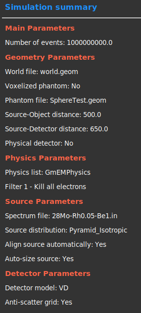
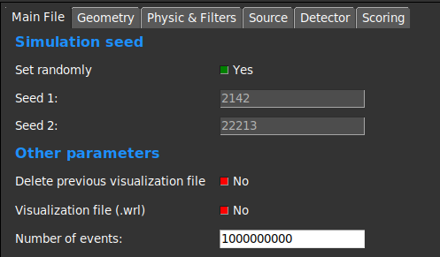
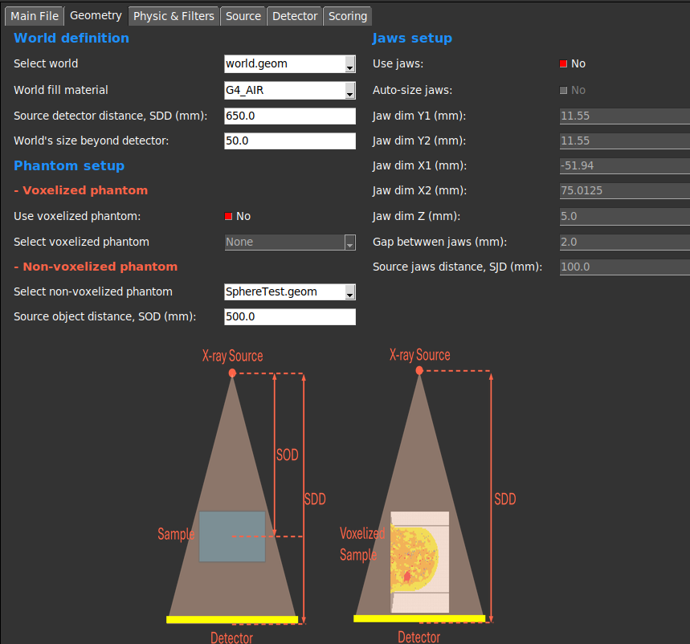
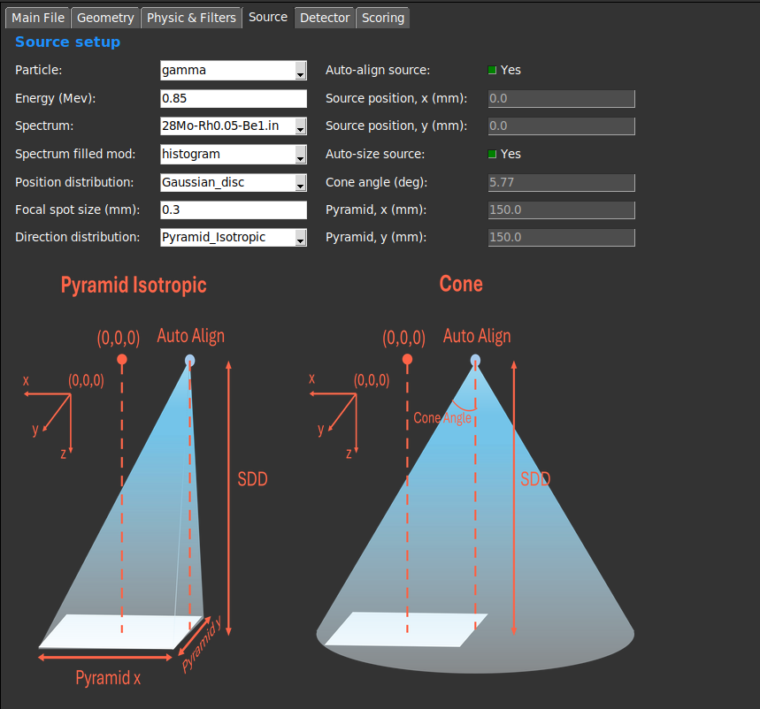
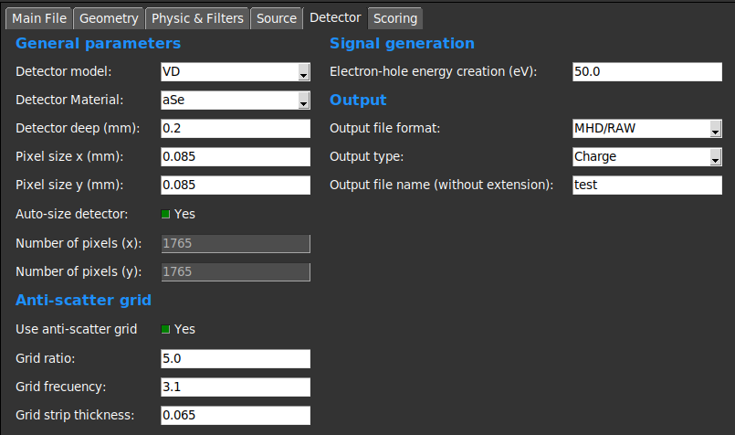

Simulation Setup
Overview
The Simulation Setup GUI is designed to facilitate the configuration of simulation parameters. It provides a user-friendly interface for users to set up their simulations, including defining the geometry, materials, and other parameters required for the simulation.
Step-by-Step Instructions
1. Configuration files Management
- Apply cfg
Applies the selected settings to the simulation.
Generates all the files necessary for the simulation.
- Load Configuration File:
Opens a dialog to select a configuration file (
.json) for the simulation.The selected file is loaded and parameters of the GUI are updated.
- Save Configuration File:
Opens a dialog to save the current configuration settings to a file.
The saved file can be used for future simulations or shared with other users.
{kind=link}
2. Summary of the simulation.

This section provides a summary of the simulation parameters.
It includes information about the geometry, materials, and other relevant settings.
Users can review this summary to ensure that the simulation is configured correctly.
This summary appears in the left panel of the GUI.
{kind=link}
3. Main Frame

This frame contains some key parameters of the simulation.
- Simulation Seed:
This parameter allows users to set the seed for the random number generator.
The seed is used to initialize the random number generator, ensuring reproducibility of the simulation results.
Users can enter a specific seed value or leave it blank to use a default value.
- Generate WRL:
This option allows users to select whether a WRL file should be generated during the simulation.
The WRL file contains the geometry information of the simulation, which can be used for visualization purposes.
Users can check or uncheck this option based on their requirements.
- Number of Events:
This parameter allows users to specify the number of events to be simulated.
Users can enter a specific number or leave it blank to use a default value.
The number of events determines the size of the simulation and can affect the accuracy of the results.
The number must be a positive integer and the maximum value is 2.1e9.
{kind=link}
4. Geometry Frame

This frame allows users to define the geometry of the simulation.
- World Definition:
Users can select the .geom file that describes the world of the simulation. This world file must be located in the geom/worlds/ folder.
The material of the world can be defined, by default it is set to G4_AIR.
The distance (mm) between the X-ray source and the world is defined in the SDD entry.
The world size beyond the detector is the gap (mm) between the end of the detector and the limit of the world.
- Phantom Setup:
This section allows users to define the phantom setup for the simulation.
Users can select between voxelized or non-voxelized phantoms.
- If voxelized phantom is selected, users must select the .g4dcm file that describes the phantom of the simulation. This file must be located in the data/g4dcm/ folder.
The voxelized phantom is positioned leaving a small gap from the detector.
- If non-voxelized phantom is selected, ssers must select the .geom file that describes the phantom of the simulation. This phantom file must be located in the geom/elementsInWorld/ folder.
The distance (mm) between the X-ray source and the phantom is defined in the SOD entry.
- Jaws Setup:
This section allows users to define the jaws setup for the simulation.
If Pyramidal direction distribution is selected, we recommend to not use jaws because they are not necessary.
In case of using jaws, we recommend to activate the Auto-Size flag, which will automatically set the jaws size and position.
Users can select the jaws position and size for the simulation.
- Physics & Filters:
This section allows users to define the physics list and filters for the simulation.
Users can select the physics list to be used in the simulation through a combobox with the available options.
- Users can also select the filters to be applied to the simulation. A brief description of each filter is provided in the documentation.
Filter 1 - Kill all electrons. This filter is used to kill all electrons in the simulation once they are created (recommended).
Filter 2 - Kill secondary tracks. This filter is used to kill secondary tracks. A track is considered secondary if it comes from other track, i.e. it comes from an interaction.
Filter 3 - Kill scattered photons. This filter is used to kill scattered photons. A photon is considered scattered if it has been scattered through an interaction.
Filter 4 - Kill photons at the jaws. This filter is used to kill all photons that reach the jaws. If no jaws are used, this filter must be disabled.
{kind=link}
5. Source Frame

This frame allows users to define the source setup for the simulation.
Users can select the source particles (gamma or electrons).
An initialization energy must be defined, even if a spectrum is used.
Users can select if they want to use a spectrum or a fixed energy.
- If a spectrum is selected, users must select the .txt file that describes the spectrum of the simulation. This file must be located in the spectra/ folder.
The spectrum file must contain two columns: energy (MeV) and intensity (counts).
The energy values must be in keV and the intensity values must be in counts.
The energy values must be in ascending order.
The intensity values is recommended to be normalized to 1.
The energy distribution can be defined as individual bins with the energy and intensity values given by the spectrum file (histogram) or as a continuous distribution (interpolate).
- The position of the source can be defined in the GUI or can be set automatically by using the Auto-Align flag.
The Auto-Align flag will automatically set the source position to left side of the detector.
The source position is defined in mm.
The source is always positioned in Z=0.
The (x,Y) coordinates of the source can be defined in the GUI, disabling the Auto-Align flag. These coordinates are defined in mm.
- The position distribution of the source can be selected through a combobox. The available options are:
Single Point: The source is a point source.
Gaussian_dis: The source is a disc with a Gaussian distribution. The radius of the disc is the Focal spot size (mm).
- The direction distribution of the particles generated by the source can be selected through a combobox. The available options are:
Constant: The particles follow a constant direction. They going perpendicular to the detector.
Pyramid_Isotropic: The direction of the particles follows a pyramidal distribution, making sure all the primary particles reach the detector. The pyramid size can be defined in the GUI or can be set automatically by using Auto-Size flag. The angles follows an isotropic distribution.
Cone: The direction of the particles follows a conical distribution. The angle of the cone can be defined in the GUI or can be set automatically by using the Auto-Size flag.
SemiCone: The direction of the particles follows a semi-conical distribution. The angle of the cone can be defined in the GUI or can be set automatically by using the Auto-Size flag.
{kind=link}
6. Detector Frame

This section allows users to define the detector setup for the simulation.
- Users can select the detector model.
- MCD model: The detector is defined as a box with a specific size, position, and material. This detector model muste be defined in the geom/elementsInWorld/ folder.
All interactions are simulated in the detector as any other Geant4 solid.
- VD model: The detector is defined as a virtual plane with a specific size, position, and material.
The interactions are simulated applying an efficiency factor defined in plugins/resources/ folder.
The simulation is faster than the MCD model, but results can be less accurate.
Users can set the pixel size (mm) of the detector.
- The number of pixels in the detector can be defined in the GUI or can be set automatically by using the Auto-Size flag.
The Auto-Size flag will automatically set the number of pixels to cover all the voxelized phantom.
The Auto-Size flag does not work properly with non-voxelized phantoms.
- Anti-Scatter grid
This section allows users to define the anti-scatter grid setup for the simulation.
Users can set the anti-scatter grid ratio, frequency and strip thickness (mm).
The modelation of the anti-scatter grid is done following the instructions of Day and Dance [3].
- Signal generation
This section allows users to define the output of the simulation.
Users can select the output type: Energy or Charge (recommended Energy and convert it to charge o gray scale through the image formation GUI module).
Users can select the output format: MHD/RAW, DICOM or text.
{kind=link}